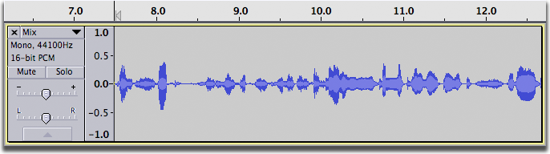
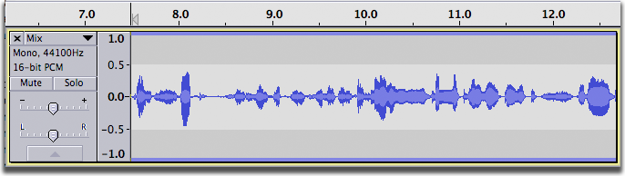
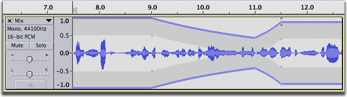
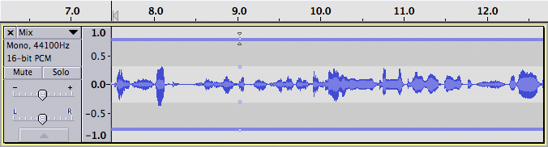
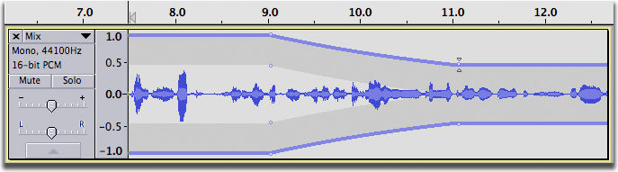
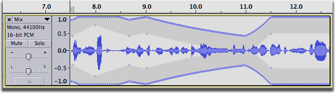
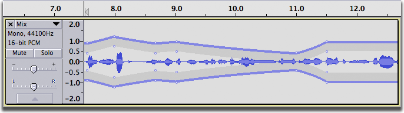

Envelope Tool
From Audacity Manual
Envelope Tool
When you select Envelope Tool from the Tools Toolbar, your track, which normally looks like this:
- 
now has a thick blue border at the top and bottom of the waveform, like this:
- 
Here's an example of an amplitude envelope applied to the track. The volume is made to diminish slowly between 9 and 11 seconds, and then to grow again much faster during the next half second (note the much steeper slope of the blue line). The volume is directly proportional to the height of the waveform - the smaller you make the waveform, the quieter it will sound:
- 
An amplitude envelope is manipulated by a number of control points. Each control point is visible by its four handles (the small circles in the image above), by which you can drag the point up or down to control the volume level.
Adding and editing Control Points
Just click the mouse button anywhere in a track to create a new control point.
- 
The entire track follows your new control point until you add another one. Click in a different spot to add a new control point.
- 
The audio will always change smoothly between each control point, so you only need to add as many as are necessary. You can click in either the top or bottom half of a track to create a new point. If you have a stereo track, the same envelope will apply to both channels.
If you want to place a new control point very near an existing one, Audacity might get confused and try to move the existing one rather than create a new one. It's sometimes easier to click farther away from the existing one and then drag it closer.
Removing control points
To remove a control point, click on any one of its control points and drag it outside the track. Remember, you can also use to undo your envelope changes in sequence.
Extra amplification
If you are amplifying a quiet passage, you can amplify outside the original volume envelope of the track by grabbing either of the inner control points. When you do this, Audacity can't display the full shape of the envelope, and changes the border to a dotted line in the affected area:
- 
However you can make the extended amplitude envelope visible by zooming out vertically.
- 
Track gain control
Totally separate from the amplitude envelope, each track has a gain slider in its Track Control Panel (the slider is just underneath the Mute and Solo buttons). This adjusts the volume of the whole track, like can do, but without modifying the waveform itself. Therefore you don't have to use Envelope Tool to adjust the overall volume of a track - use it to specify changes in volume through the course of the track, then you can make fine adjustments to the overall volume with the gain slider.
Rendering envelope changes
A lot of volume changes can make a track more cumbersome to work with, so sometimes when you're sure you've got them right, you may want to replace the original track and its control points with a new track that has the envelope changes rendered to the waveform and thus has its control points removed. To do this, select the track you're finished with and click . This option is sometimes called Bounce in other software. The resulting track will sound the same but will no longer have its amplitude envelope control points.
Naturally you can always add further control points later on, or get all the original control points back by undoing the Mix and Render if you're not happy with it. As an alternative you could which lets you render to a new track without envelope points but keep the original track with its envelope points. This allows you to more easily experiment on a visually "clean" track by adding extra points while still being able to use the or buttons to compare with the original unrendered track.